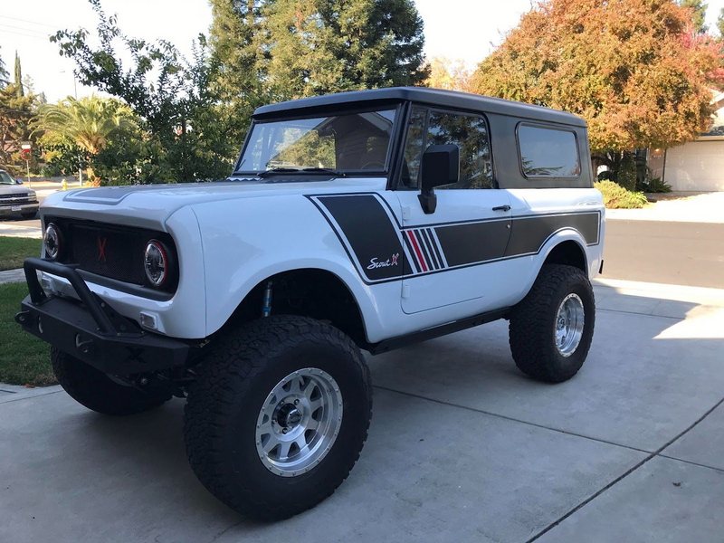

Past Work and Experience
This page will detail some of the jobs and other experiences I have had in my life.
My first job was as an Auto Body Tech Assistant at Smith Boy's Garage in California. There I assisted the Head Technician with fixing up a four-wheel-drive 1968 International Harvester Scout 800 to sell.
At Smith Boy's Garage, we did all the body work for the Scout, including fixing the dents and scratches in it, sanding off all the old paint, and repainting it. We added fuel injection, lifted suspension, and a four-speed automatic overdrive transmission. After just under two years of working on it, it was finished. We called it the Scout X and sold it for $90,000. This job required a good work ethic, persistence, and patience.
Next, I served as a missionary for the Church of Jesus Christ of Latter-Day Saints in Upstate New York. This was not a job, but instead a two-year volunteer service opportunity. As a missionary, I taught about Jesus Christ and gave community service and humanitarian aid. During my time serving in Upstate New York I learned valuable skills in communication, teamwork, and time management.

Upon finishing serving as a missionary for two years, I returned to California and got a job as an Assistant Irrigation Technician at Central California Landscaping Services. There, I assisted an Irrigation Technician in fixing broken pipes and other irrigation issues all over Central California. As I worked there, I learned important problem solving skills. After working there for one month, I began attending BYU-Idaho.
When I moved to BYU-Idaho, I got a job in University Food Services as a worker at Soleil. Now, I am working as a cashier at Soleil.